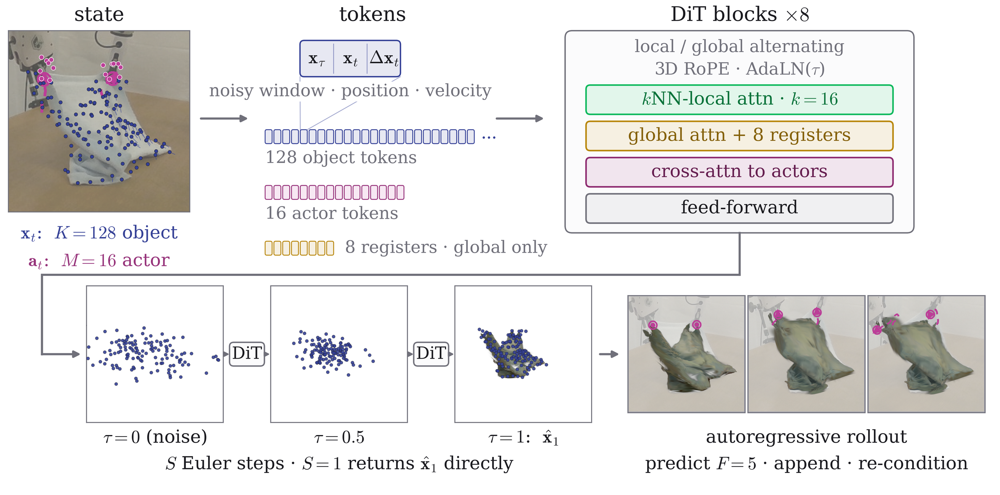
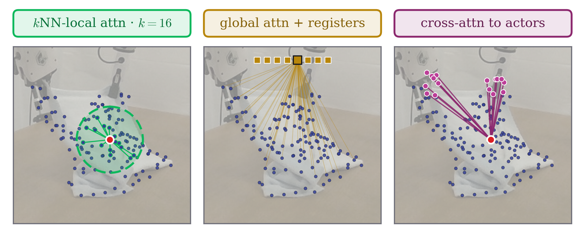

PointCast: One World Model for Rigid, Articulated, and Deformable Object Manipulation
Abstract
World models are useful for robotic manipulation because a robot that can predict how a commanded end-effector motion moves an object can plan that motion before executing it. We present PointCast, a point-set world model that spans rigid, articulated, and deformable manipulation. The state is a persistent set of 3D points on the end-effector and the object. It is mesh-free, topology-agnostic, and cheaper to predict than pixels. Because every point is supervised individually, the model learns where material goes rather than what the cloud looks like. A diffusion transformer denoises a short window of future point positions, conditioned on the points' recent history and the commanded end-effector motion. Its attention alternates between local and global, and cross-attention to the end-effector carries the coupling that other models build by hand. One architecture at 19.8M parameters, one training recipe, and one checkpoint per regime cover rigid objects, cloth, rope, and multi-joint cabinets. Trained on randomized simulation and scored against four baselines under one evaluation protocol, it performs best on three of four regimes and second on rigid. Trained on the PGND benchmark's own robot episodes, it has the best mean in four of six categories, is statistically comparable to the best in the other two categories, and outperforms PGND in all six. Frozen inside sampling-based model-predictive control at one network evaluation per window, it plans four simulated tasks over 64 episodes, comparable to ParticleFormer and PGND and significantly better than PTv3 and AdaptiGraph.
Method
The state is a persistent set of 3D points on the object and on the end-effector. A diffusion transformer denoises the next window of point positions from their recent history and the commanded end-effector motion, and one architecture with one training recipe covers rigid, articulated, and deformable objects.


Simulation rollouts
Three held-out interactions per regime, every frame of the free-running rollout. Columns in Table I order, ground truth rightmost. Ground truth in blue, predictions in orange, the end-effector in magenta, the cabinet's actuated part in gold. History frames, the conditioning every model receives, are identical in every column and labelled. Each card offers three interactions from the middle of the distribution: the paper's pick, which sits at the median of PointCast's error over the evaluation pool and is shown second, and its two nearest neighbours in that ranking. The hardest tenth of each pool is in the Limitations section.
Real-world rollouts
Three test episodes per PGND-benchmark category, all 40 frames each. Ground truth is the photograph; every prediction column is the episode's pre-interaction Gaussian splat advected by that method's predicted point motion, the end-effector marked in magenta. Rope and box appear here beyond the four categories the paper shows. Each card offers three episodes from the middle of the distribution: the paper's pick, which sits at the median of PointCast's step-30 error over the category and is shown second, and its two nearest usable neighbours in that ranking. The hardest tenth of each category is in the Limitations section. Photographs and splats from the PGND release.
Zero-shot rollouts
The four windows of the paper's zero-shot gallery, every frame, simulation checkpoints applied with no real training data to four captures whose motions match the training actions: the Push-T replay of Diffusion Policy, Franka block pushes, rope with multi-view tracks, and cloth grasp lifts. Push-T and Franka are point renders with the pool's actor points; rope and cloth are splats with the photograph as ground truth and the recorded end-effector drawn. The tracked ground truth of the two point rows is low-pass filtered along time for display only (Savitzky-Golay, 7 frames): those tracks reverse each point's direction every frame, which is capture noise rather than object motion, and every model's own prediction is already smoother than the raw track. Scores everywhere on this page and in the paper use the unfiltered tracks; filtering them would move the error by about a tenth of a percent. On the cloth capture the tracked ground truth never leaves the table while the photograph shows the cloth lifted, and every method is scored against those tracks. Push-T and Franka offer three windows from the middle of the distribution, the paper's pick and its two nearest neighbours in PointCast's error ranking; rope and cloth offer the one window their photograph registration covers. The hardest tenth of the two point-rendered captures is in the Limitations section.
Planning with the world model
PointCast frozen inside sampling-based MPC, one network evaluation per window. Three episodes per task, re-rendered from the stored simulator states: object, goal point set, end-effector with its executed path. One frame per executed window. The three seeds are those whose scored episodes sit closest to the median of PointCast's error over the campaign, and the clips are fresh re-runs of those seeds: the planner draws unseeded noise, so a re-run is a different episode from the scored one. Each clip ends three windows after the task's success criterion is first met; the scored run continues to its fixed budget.
Every arm on the same episode
The same planner, cost, budget, seed and goal for every rollout model, only the model changes: random actions, AdaptiGraph, PGND, PTv3, ParticleFormer and PointCast, in Table V order. One frame per executed window, the full budget, one camera per task. A column is marked from the first window at which it meets the task's success rule. Illustrative re-runs of the scored configuration; the flow-matching arms draw unseeded noise, and a re-run is a different episode.
Limitations
Where the model is weak, shown the same way as everything else on this page. The clips below are the hardest tenth of each evaluation pool, and a task the model does not begin at all.
The model does not start a push from rest
PointCast plans the rope drag task and cannot start the rope push task. Placed at rest one centimetre behind a stationary rope, it predicts about 2 mm of motion for a push the simulator answers with 37 mm, so holding still looks as good as pushing and the planner never commits. Nothing in its rope push training data shows a visible tool beside a still rope: there the rope is already moving within one frame of the tool appearing, so the model learned to continue the motion it observes rather than to read the tool. The same behaviour appears in a checkpoint trained on identical data with a deterministic head, and it is unchanged across guidance scales, so this is a property of what the model was shown and not of how it samples. A model that ties motion to the tool instead of to the observed history does start the push. Repairing ours needs training data whose pushes begin before contact.
Where the benchmark saturates
The planning tasks that carry an object to a goal are reached by every learned world model within the first few windows, so those rows separate the planner from the models rather than the models from each other. The two pushing tasks are the ones that discriminate, and below the success bar the paper reports, their ordering is not stable.
Supplementary tables
Comparisons that did not fit the paper, with their protocol notes.
Planning: the four-task table with its random-action floor
| Task | Metric | init | random | AdaptiGraph | PGND | PTv3 | ParticleFormer | PointCast (ours) |
|---|---|---|---|---|---|---|---|---|
| SE(2) pose push | per-point (cm) | – | 12.61 | 11.17 [16.89] | 4.79 [14.46] | 2.75 [5.06] | 2.56 [4.14] | 1.93 [3.22] |
| Articulated opening | part err (cm) | – | 14.63 | 4.89 [15.00] | 0.89 [1.36] | 0.45 [1.06] | 0.21 [0.56] | 0.41 [0.99] |
| Cloth drag | Chamfer (cm) | 27.8 | 41.54 | 27.75 [53.26] | 2.83 [4.07] | 2.41 [3.06] | 2.08 [2.66] | 2.09 [2.66] |
| Rope drag | Chamfer (cm) | 15.4 | 35.16 | 3.28 [3.96] | 1.91 [3.74] | 5.87 [10.85] | 2.16 [3.34] | 1.71 [3.44] |
Mean final distance [p90] over 16 episodes per task; init is the starting distance, best in bold, second underlined. The 64 episodes are pooled, each distance divided by its median across models, and compared with a paired Wilcoxon test: PointCast is significantly better than PTv3 — in the pooled test and on three of the four tasks taken alone — and better than AdaptiGraph and the random floor on every task. It is not significantly different from ParticleFormer or PGND, and 16 episodes per task cannot show the models equal either.
Additional ablation rows not printed in the paper
These rows were cut from Table IV for the page limit or moved here by ruling. They were trained and scored on the training lineage that preceded the shipped recipe (constant learning rate, the same architecture and pools). Their base row is therefore a different checkpoint from the shaded row of Table IV, and the two tables are not compared cell to cell. Each row is read against its own base, as in the notes. All rows are scored at S = 1 on the pools of Table I, with the cabinet column the actuated joint.
| Variant | Rigid | Cloth | Rope | Cabinet* |
|---|---|---|---|---|
| Number of control points (K = 128 is the base of this lineage) | ||||
| K = 32 | 28.07 | 41.38 | 15.09 | 12.82 |
| K = 256 | 25.61 | 28.45 | 16.38 | 9.13 |
| K = 512 | 30.26 | 31.95 | 18.27 | 18.49 |
| Architecture | ||||
| no register tokens | 27.08 | 30.48 | 16.68 | 9.56 |
| local-only self-attention | 26.54 | 31.26 | 16.34 | 8.92 |
| global-only self-attention | 27.54 | 31.01 | 16.41 | 7.89 |
| Recipe and checkpoints | ||||
| no part-rigidity term (cabinet) | – | – | – | 7.12 |
| joint checkpoint, 1× budget | 34.08 | 42.73 | 19.32 | 62.61 |
- Control points. Against this lineage's K = 128 base, K = 256 is better on cloth (−10.4%) and rope (−1.9%) and worse on rigid (+1.2%); K = 32 and K = 512 are worse on the cabinet joint. K = 128 is a compromise across regimes, not a per-regime optimum.
- Register tokens. Removing them is +7.0% on rigid and −4.0% on cloth by paired test, and a tie on rope (−0.1%).
- Self-attention pattern. Against the alternating base, local-only is +4.9% / −1.5% / −2.1% / +7.0% and global-only +8.8% / −2.3% / −1.7% / −5.3% on rigid / cloth / rope / cabinet joint. Both exceed the three-seed spread on rigid alone (spread 3.2% rigid, 4.5% cloth, 19% rope, 18.2% cabinet joint). The pattern is load-bearing on rigid and inside the spread elsewhere.
- Part-rigidity term. A per-part rigid-alignment term the earlier recipe carried on the cabinet; it is not in the shipped recipe.
- Joint checkpoint at 1× budget. One checkpoint on all four pools at the per-regime budget, +34.7% / +34.6% / +15.7% on rigid / cloth / rope against that lineage's per-regime cells. Its checkpoint selection was made on rigid alone, and the 4×-budget row of Table IV, selected on a regime-balanced validation slice, supersedes it.
Real benchmark with AdaptiGraph at its gate, zero-shot with AdaptiGraph, simulation checkpoints on the PGND benchmark, ParticleFormer reimplementation
The comparisons below did not fit the paper or were ruled out of it. They are complete tables with their own protocol notes, kept here so that every method appears on every benchmark.
Real benchmark with AdaptiGraph, every method starting at AdaptiGraph's gate
AdaptiGraph's released evaluation starts its rollout at the first frame in which the end-effector moves (its gate) and reaches the benchmark's scored frame in only part of the episodes. Here every method starts predicting at that gate: the last observed frame is the one before it, and the target is H = 10 predicted frames after it. Episodes whose target falls past the end of the recording are excluded. Values are mean mm over all kept episodes; the AdaptiGraph column covers only the episodes its own rollout reaches (nAG) and is paired against PointCast on those episodes. PGND is scored on its own particle subset by its own driver. The horizon is 10 predicted frames after the gate, not Table II's 29 from the episode start, and these values are not Table II cells.
| Category | n | PointCast | ParticleFormer | PTv3 | PGND | AdaptiGraph (nAG) | PointCast vs AdaptiGraph, p |
|---|---|---|---|---|---|---|---|
| cloth | 40 | 18.07 | 16.22 | 20.94 | 18.85 | 20.25 (24) | 0.47 |
| rope | 39 | 9.65 | 12.62 | 14.45 | 15.16 | 23.37 (26) | 6.0e-8 |
| box | 20 | 13.68 | 14.27 | 13.96 | 16.43 | 14.05 (13) | 0.79 |
| bread | 20 | 8.29 | 9.93 | 10.71 | 9.14 | 11.81 (11) | 0.019 |
| paper bag | 20 | 7.83 | 15.10 | 11.05 | 9.63 | 10.47 (12) | 0.13 |
| plush | 19 | 21.44 | 25.03 | 24.56 | 20.15 | 29.97 (16) | 0.011 |
| Category | vs ParticleFormer | vs PTv3 | vs PGND |
|---|---|---|---|
| cloth | 14/40, 0.070 | 30/40, 0.0083 | 25/40, 0.31 |
| rope | 25/39, 0.0012 | 31/39, 1.5e-5 | 33/39, 2.5e-6 |
| box | 14/20, 0.12 | 12/20, 0.55 | 12/20, 0.22 |
| bread | 12/20, 0.11 | 14/20, 0.040 | 10/20, 0.41 |
| paper bag | 14/20, 0.036 | 15/20, 0.012 | 17/20, 0.015 |
| plush | 14/19, 0.012 | 15/19, 0.016 | 9/19, 0.57 |
With every method starting at the gate, PointCast has the best mean in four of six categories (rope, box, bread, paper bag), ParticleFormer leads cloth and PGND leads plush. AdaptiGraph is significantly better nowhere, and is significantly worse than PointCast on rope, bread and plush, on the episodes its own rollout reaches.
Zero-shot transfer with the AdaptiGraph column
The four printed columns are Table III. AdaptiGraph is scored on its own motion-gated frame set and reported with the ratio to its own static null in parentheses (a rollout that never moves the object). Its raw mm is therefore not comparable across the row, which is why the paper omits it. On the Push-T row AdaptiGraph's value depends on its radius-estimation setting (35.21 with pooled radii, 37.02 with base radii); the pooled value is printed.
| Capture (n) | PGND | PTv3 | ParticleFormer | PointCast | AdaptiGraph (× own null) |
|---|---|---|---|---|---|
| Push-T replay (70) | 37.27 | 24.67 | 18.07 | 15.35 | 35.21 (0.658) |
| Franka blocks (35) | 75.38 | 60.30 | 72.50 | 52.86 | 68.33 (0.756) |
| Rope (123) | 58.07 | 83.45 | 42.47 | 49.05 | 55.99 (0.862) |
| Cloth (31) | 291.12 | 54.77 | 32.43 | 42.20 | 44.62 (0.966) |
Simulation checkpoints on the PGND benchmark, zero-shot
The cloth and rope simulation checkpoints of Table I, applied with no real data to the PGND benchmark's own 40-episode test splits and scored on the benchmark's metric, the mean displacement error at step 30 in mm. Two protocols: matched cadence keeps the benchmark's frame rate, the same inputs as every Table II arm with only the checkpoint changed; matched operating point re-strides the same episodes until a window carries the end-effector motion of a training window, and scores at the same physical target. Both at the deployed S = 1. The two reference rows are Table II cells.
| Arm | Cloth | Rope |
|---|---|---|
| Simulation checkpoint, zero-shot, matched cadence | 92.45 | 134.33 |
| Simulation checkpoint, zero-shot, matched operating point | 65.25 | 51.87 |
| PointCast trained in-domain (Table II) | 32.20 | 15.83 |
| PGND native (Table II) | 44.49 | 39.14 |
Re-striding to the training operating point closes 45% (cloth) and 70% (rope) of the distance from the matched-cadence cell to the in-domain cell, which places most of the matched-cadence error in the action-distribution mismatch rather than in the geometric interface. Closing the rest requires target-domain episodes, which is what Table II then shows the same architecture doing. One seed per arm; no fine-tuning arm was run.
ParticleFormer reimplementation
ParticleFormer released neither code nor hyperparameters. Our reimplementation follows the paper element by element; the hyperparameters the paper leaves open take the values of our shared training protocol.
| Element | ParticleFormer paper | Our implementation |
|---|---|---|
| Backbone | L = 3 plain full-attention Transformer encoder over all particle tokens; no positional encodings (Sec. 3.2) | Standard Transformer encoder, L = 3, full attention, no positional encoding, no rotary embedding, no kNN mask |
| Token | z(i) = f_proj([x(i), m(i), u(i)]) (Eq. 2) | [position (3), motion (3), type one-hot (2)] through an MLP projection |
| End-effector particles | First-class tokens in the same self-attention | Actor points (with per-point motion) as in-stream tokens; padded slots masked |
| Object motion input | u_obj = 0; Markov, no history or velocity (Eq. 1 and 2) | Object tokens carry motion = 0 and only the last history frame's positions |
| Decoding | Shared per-particle displacement head, x̂ = x + Δx̂ (Eq. 4 and 5) | LayerNorm + Linear(d to 3), clamped, added to the last positions |
| Loss | L = α·CD + (1 − α)·HD (Eq. 6) | α times the symmetric Chamfer distance plus (1 − α) times the Hausdorff distance |
| Training | k-step autoregressive unroll, k = 5, loss over the rollout (Sec. 3.3) | k = 5 unroll, per-step hybrid loss (mean), full backpropagation through the unroll |
| Inference | Deterministic single forward per step | Deterministic head, one forward per rollout window |
Protocol-conformed settings, identical to PointCast and PTv3: K = 128 farthest-point-sampled control points and 16 end-effector points, five history windows, the per-regime frame stride, position normalization, rotation augmentation, state noise, the 0.85 / 0.15 split by object, Adam at learning rate 1e-4 with the cosine schedule, batch 64, 200 epochs, seed 42.
BibTeX
@inproceedings{pointcast2027,
title = {PointCast: One World Model for Rigid, Articulated, and Deformable Object Manipulation},
author = {Anonymous Authors},
booktitle = {Submission to the IEEE International Conference on Robotics and Automation (ICRA)},
year = {2027},
note = {Author information omitted for double-anonymous review}
}